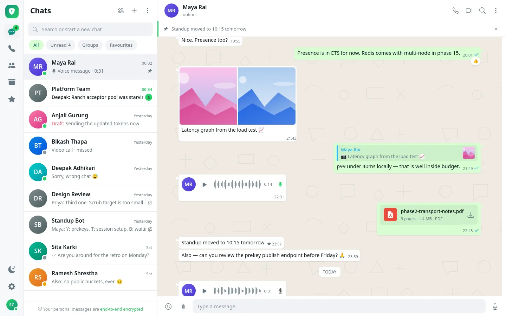
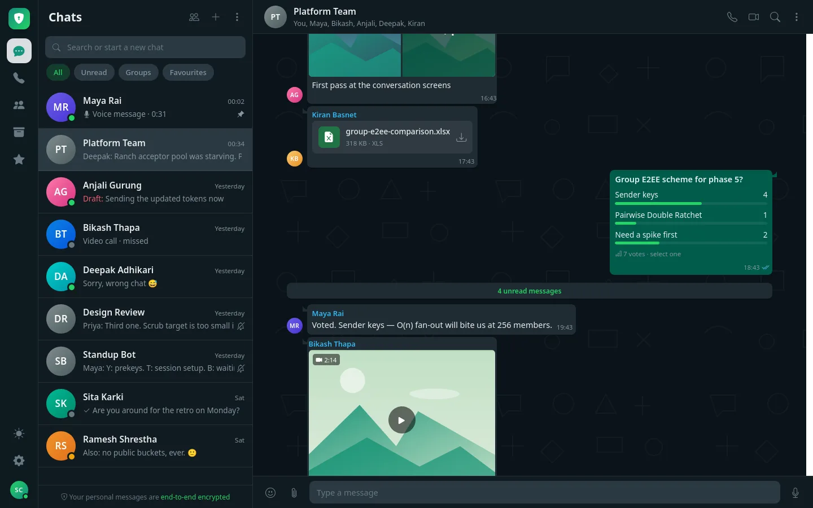
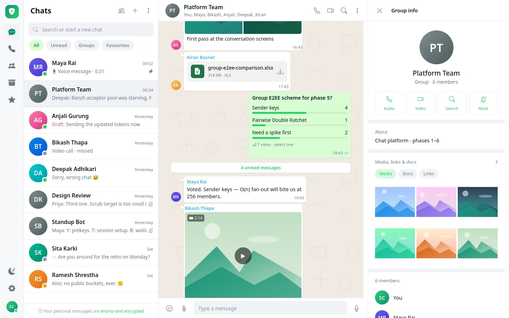
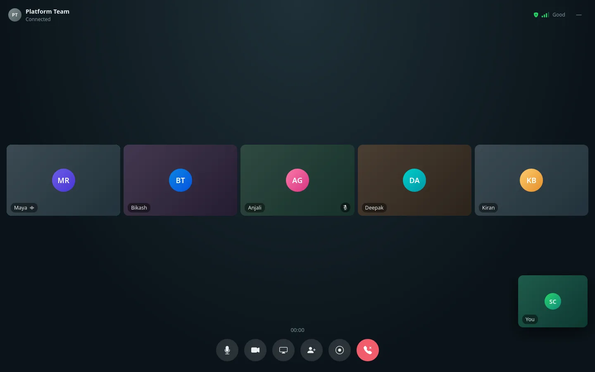
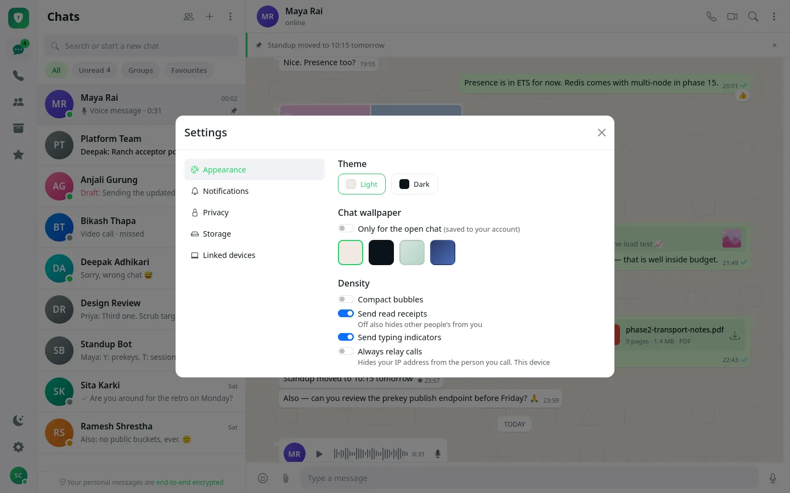
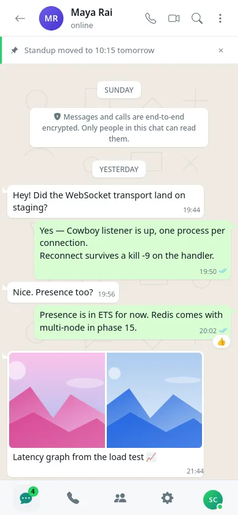

Messaging · Cryptography
Cipher
A WhatsApp-style messenger where the server never sees a message, a file or a call in the clear. Text, files up to 100 MB, voice and video calls, and group video conferences, all end-to-end encrypted. Built from scratch on Go, Erlang/OTP and Kubernetes, in 16 phases: text → files and images → audio → video.
The live demo is a test deployment. The cryptography hasn't been externally audited yet, so please don't use it for anything sensitive.

The app
The web client is plain JavaScript with no build step, layered strictly as transport → crypto → store → render, so the code that draws the screen never touches a socket or a key. Screenshots come from the client's built-in demo mode, so names and messages are fictional.




Responsive
Works at phone width too
The same client adapts to small screens with a bottom navigation bar. Native Android and iOS apps are next, and they'll reuse the same Go crypto core through gomobile.

Architecture
Writes go to Erlang and reads go to Go. There is deliberately no HTTP endpoint for sending messages, so only one writer allocates each conversation's message order.
How a message travels
- Encrypt per deviceThe sender's browser encrypts once for each of the recipient's devices, or once with a sender key for a group.
- Send over WebSocketThe envelope goes over TLS 1.3 to the Erlang cluster.
- Store, then tickErlang assigns the next gap-free sequence number and writes to Postgres before acknowledging. A tick means the message is stored.
- RouteThe envelope reaches every connected device, whichever node it's on.
- Decrypt and readThe recipient decrypts it and sends a read receipt back, the blue tick.
- Offline? PushThe push carries only a conversation id. On reconnect the client replays what it missed by sequence number.
Security model
The server is treated as an untrusted bulletin board. It stores ciphertext and public keys, and the database has no column that could hold anything that decrypts.
Messages
- X3DH and the Double Ratchet for 1:1 chats. Every key is used once, for forward secrecy
- Sender keys for groups, signed per sender. Removing a member forces everyone to re-key
- No silent fallback: the client refuses to send if encryption fails
Keys and devices
- Private keys are non-extractable WebCrypto keys. The WASM engine uses them by reference, so even injected script can't copy them
- 60-digit safety numbers to verify a contact
- An existing device must approve a new one with a 6-digit code
Calls
- 1:1 calls go peer to peer over DTLS-SRTP, with end-to-end encrypted signaling
- In group calls every frame is encrypted in the browser. Keys rotate on each join and leave, so the server forwards frames it can't decode
- Recording happens only in the recorder's browser, and everyone in the call is told first
Platform
- Default-deny NetworkPolicy: each internal port admits exactly one caller
- A strict CSP with no inline script and no eval, enforced in every browser test
- Signing out wipes the local cache and key store
Caveat: the protocol layer is hand-written on standard platform primitives and hasn't been externally audited yet. A cryptographic review and penetration test are the main open item before any outside users.
Features
Messaging
- 1:1 and groups of up to 256
- Ticks, typing and presence (each can be switched off)
- Replies, reactions, edit, delete for everyone
- Polls tallied from encrypted votes
- Search, drafts, pins, forward, export
Files and media
- Encrypted photos and documents up to 100 MB
- Resumable uploads with progress
- Thumbnails made in the browser, with photo metadata stripped
- Inline images limited to safe formats (never SVG)
Calls
- 1:1 voice and video, with push ringing
- Group conferences: screen share, grid and speaker views
- Switches networks mid-call without dropping
- Move a call to another device
- Client-side encrypted recording
Multi-device and ops
- Every message encrypted to all your devices
- Encrypted history transfer to a new device
- Three-node Erlang cluster with failover
- Grafana dashboards and 13 alert rules
- Load, chaos and failover test suites
Engineering decisions
No libsignal for browsers, so we wrote our own
Signal publishes no browser build, and the third-party ports are GPL and unmaintained. X3DH and the Double Ratchet were written on WebCrypto primitives, then moved into a single Go core compiled to WebAssembly and gomobile, so every client shares one key schedule.
Kafka deferred: Erlang writes Postgres directly
A tick has to mean "stored", and the message order has to come from the database anyway. So Erlang writes Postgres before acknowledging, instead of going through a Kafka projector. RabbitMQ stays as the push queue, because a log and a work queue solve different problems.
Sender keys with signatures and epochs
Pairwise encryption would add about 8 KB of wrapped keys to every message in a 50-member group. Sender keys fix that. Per-sender signing keys and a membership epoch keep authorship and member removal meaningful.
LiveKit forwards; Erlang and the browsers keep control
After a spike in which all 10 people in a room heard each other with frame encryption working, LiveKit was chosen purely as a forwarder. Erlang admits participants and signs their tokens, and the frame keys belong to the browsers.
A realtime tier that survives losing a node
Going to three Erlang nodes meant no node-local state, detecting a dead node in about 8 seconds, a client heartbeat, resuming calls, and repairing gaps by sequence number. The load test also found bugs that functional tests couldn't.
Status
Done (Oct 2026)
All 16 phases: text, files and images, previews, 1:1 voice and video, encrypted group calls and conferences, the three-node cluster, observability and CSP. All 2,036 checks pass, and a production-test deployment is running.
Next
An external cryptographic review and pen test. Then public TURN and SFU, Postgres high availability and backups, and native mobile apps on the shared Go crypto core.